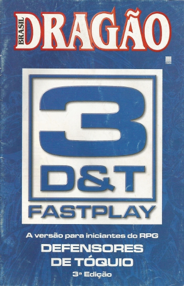
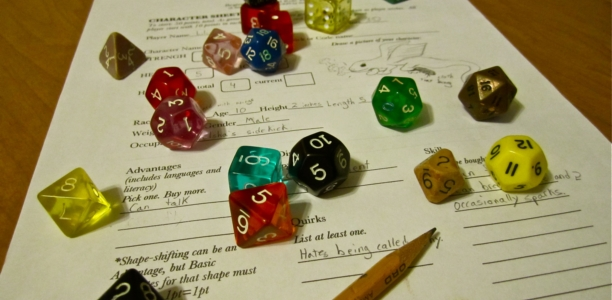

Para começar a jogar RPG é necessário , basicamente, um Mestre (DM ou Dungeon Master) para narrar a história descrevendo o cenário e cada acontecimento. Os jogadores, que são os que fazem as escolhas/ações de seus personagens.
Cada jogador deve escolher uma classe e uma raça, por exemplo: Humanos, Meio Elfo, Elfo, Meio Orc, Anão, Halfling, Gnomo, Tiefling, Meio Gigante, Goblin, Orc, Dragonborn, Drow, Pixie, Meio Demônio, Meio Troll…entre muitas outras!
Todo RPG necessita de um sistema e um cenário para ser jogado, cada cenário tem um sistema adequado a ser jogado. Exemplo:
Dungeons & Dragons/D20: O mais famoso de todos os sistemas. Perfeito pra jogar em um mundo Medieval/Fantasia, com dragões e criaturas mágicas. A cada edição são lançados 3 livros: Livro do Jogador, Livro do Mestre e Livro dos Monstros. Nesse sistema se utiliza vários dados de várias faces.
DShadowrun/cyberpunk2020: Em um futuro cyberpunk a moda é usar implantes para melhorar suas habilidades e hackers que invadem sistemas de segurança de mega-corporações criminosas. Criaturas bizarras e meta-humanos.
3D&T, Defensores de Toquio: É um sistema de RPG brasileiro (feito pela galera da revista Dragão Brasil) perfeito pra quem nunca jogou e quer aprender a jogar RPG. Tem regras claras e bastante simples. Com alguns dados de 6 lados é possível jogar em qualquer cenário que você queira.
Dados: Dados de vários lados são usados independente do sistema escolhido. São chamados respectivamente de D4, D6, D8, D10, D12, D20 e D100, sendo o último para medir porcentagens. Esses dados tem os mais variados tipos e formatos.
Fichas de Personagens: Essas fichas descrevem os pontos de vida, habilidades, itens, atributos, pontos fracos e até a história do seu personagem.
Regra básica: LEIA MUITO. Jogar RPG de mesa exige um estudo, principalmente se você for mestrar a partida. É normal parar pra ler detalhes e lembrar de coisas, mas você precisa saber o mínimo suficiente pra ter uma partida decente.